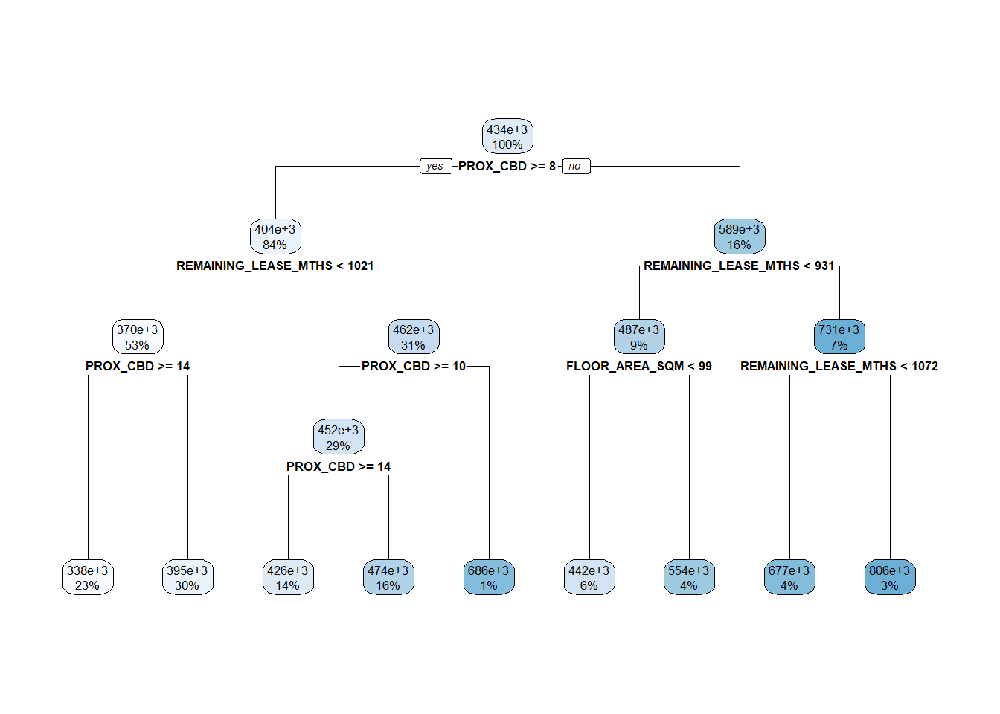

pacman::p_load(performance ,ggstatsplot, rpart.plot, rpart, gtsummary, tidyverse, tidymodels, SpatialML, GWmodel, sf, spdep, tmap)In-class Exercise 07: Geographically Weighted Predictive Models
Overview
Predictive modelling uses statistical learning or machine learning techniques to predict outcomes. By and large, the event one wants to predict is in the future. However, a set of known outcome and predictors (also known as variables) will be used to calibrate the predictive models.
Geospatial predictive modelling is conceptually rooted in the principle that the occurrences of events being modeled are limited in distribution. When geographically referenced data are used, occurrences of events are neither uniform nor random in distribution over space. There are geospatial factors (infrastructure, sociocultural, topographic, etc.) that constrain and influence where the locations of events occur. Geospatial predictive modeling attempts to describe those constraints and influences by spatially correlating occurrences of historical geospatial locations with environmental factors that represent those constraints and influences.
Learning outcome
In this in-class exercise, you will learn how to build predictive model by using geographical random forest method. By the end of this hands-on exercise, you will acquire the skills of:
- preparing training and test data sets by using appropriate data sampling methods,
- calibrating predictive models by using both geospatial statistical learning and machine learning methods,
- comparing and selecting the best model for predicting the future outcome,
- predicting the future outcomes by using the best model calibrated.
The Data
- Aspatial dataset:
- HDB Resale data: a list of HDB resale transacted prices in Singapore from Jan 2017 onwards. It is in csv format which can be downloaded from Data.gov.sg.
- Geospatial dataset:
- MP14_SUBZONE_WEB_PL: a polygon feature data providing information of URA 2014 Master Plan Planning Subzone boundary data. It is in ESRI shapefile format. This data set was also downloaded from Data.gov.sg
- Locational factors with geographic coordinates:
- Downloaded from Data.gov.sg.
- Eldercare data is a list of eldercare in Singapore. It is in shapefile format.
- Hawker Centre data is a list of hawker centres in Singapore. It is in geojson format.
- Parks data is a list of parks in Singapore. It is in geojson format.
- Supermarket data is a list of supermarkets in Singapore. It is in geojson format.
- clinics data is a list of CHAS clinics in Singapore. It is in geojson format.
- Childcare service data is a list of childcare services in Singapore. It is in geojson format.
- Kindergartens data is a list of kindergartens in Singapore. It is in geojson format.
- Downloaded from Datamall.lta.gov.sg.
- MRT data is a list of MRT/LRT stations in Singapore with the station names and codes. It is in shapefile format.
- Bus stops data is a list of bus stops in Singapore. It is in shapefile format.
- Downloaded from Data.gov.sg.
- Locational factors without geographic coordinates:
- Downloaded from Data.gov.sg.
- Primary school data is extracted from the list on General information of schools from data.gov portal. It is in csv format.
- Retrieved/Scraped from other sources
- CBD coordinates obtained from Google.
- Shopping malls data is a list of Shopping malls in Singapore obtained from Wikipedia.
- Good primary schools is a list of primary schools that are ordered in ranking in terms of popularity and this can be found at Local Salary Forum.
- Downloaded from Data.gov.sg.
Installing and Loading R packages
This code chunk performs 3 tasks:
- A list called packages will be created and will consists of all the R packages required to accomplish this exercise.
- Check if R packages on package have been installed in R and if not, they will be installed.
- After all the R packages have been installed, they will be loaded.
Preparing Data
Reading data file to rds
Reading the input data sets. It is in simple feature data frame.
rs_sf <- read_rds("../data/rds/HDB_resale.rds")Data Sampling
The entire data are split into training and test data sets with 65% and 35% respectively by using initial_split() of rsample package. rsample is one of the package of tigymodels.
set.seed(1234)
resale_split <- initial_split(rs_sf,
prop = 5/10,)
train_sf <- training(resale_split)
test_sf <- testing(resale_split)train_sf <- write_rds(train_sf, "../data/rds/models_2/train_sf.rds")
test_sf <- write_rds(test_sf, "../data/rds/models_2/test_sf.rds")Retriving the Stored Data
train_sf <- read_rds("../data/rds/models_2/train_sf.rds")
test_sf <- read_rds("../data/rds/models_2/test_sf.rds")train_df <- train_sf %>%
st_drop_geometry() %>%
as.data.frame()
test_df <- test_sf %>%
st_drop_geometry() %>%
as.data.frame()Computing Correlation Matrix
Before loading the predictors into a predictive model, it is always a good practice to use correlation matrix to examine if there is sign of multicolinearity.
rs_sf1 <- rs_sf %>%
st_drop_geometry()
ggcorrmat(rs_sf1[,2:17])
Building a non-spatial multiple linear regression
rs_mlr <- lm(RESALE_PRICE ~ FLOOR_AREA_SQM +
STOREY_ORDER + REMAINING_LEASE_MTHS +
PROX_CBD + PROX_ELDERLYCARE + PROX_HAWKER +
PROX_MRT + PROX_PARK + PROX_MALL + PROX_CHAS +
PROX_SUPERMARKET + WITHIN_350M_KINDERGARTEN +
WITHIN_350M_CHILDCARE + WITHIN_350M_BUS +
WITHIN_1KM_PRISCH,
data=train_df)
summary(rs_mlr)
Call:
lm(formula = RESALE_PRICE ~ FLOOR_AREA_SQM + STOREY_ORDER + REMAINING_LEASE_MTHS +
PROX_CBD + PROX_ELDERLYCARE + PROX_HAWKER + PROX_MRT + PROX_PARK +
PROX_MALL + PROX_CHAS + PROX_SUPERMARKET + WITHIN_350M_KINDERGARTEN +
WITHIN_350M_CHILDCARE + WITHIN_350M_BUS + WITHIN_1KM_PRISCH,
data = train_df)
Residuals:
Min 1Q Median 3Q Max
-179676 -39020 -1719 36755 327324
Coefficients:
Estimate Std. Error t value Pr(>|t|)
(Intercept) 109622.960 11993.611 9.140 < 2e-16 ***
FLOOR_AREA_SQM 2733.136 103.116 26.505 < 2e-16 ***
STOREY_ORDER 14198.168 384.182 36.957 < 2e-16 ***
REMAINING_LEASE_MTHS 346.624 5.208 66.557 < 2e-16 ***
PROX_CBD -16943.794 227.064 -74.621 < 2e-16 ***
PROX_ELDERLYCARE -13891.413 1124.964 -12.348 < 2e-16 ***
PROX_HAWKER -17758.037 1461.269 -12.152 < 2e-16 ***
PROX_MRT -32357.534 1965.095 -16.466 < 2e-16 ***
PROX_PARK -6714.626 1672.160 -4.016 5.99e-05 ***
PROX_MALL -14080.474 2268.191 -6.208 5.64e-10 ***
PROX_CHAS -5819.260 7208.182 -0.807 0.419510
PROX_SUPERMARKET -24077.152 5068.317 -4.751 2.06e-06 ***
WITHIN_350M_KINDERGARTEN 8730.822 721.593 12.099 < 2e-16 ***
WITHIN_350M_CHILDCARE -4629.126 399.231 -11.595 < 2e-16 ***
WITHIN_350M_BUS 979.339 252.851 3.873 0.000108 ***
WITHIN_1KM_PRISCH -8434.367 553.862 -15.228 < 2e-16 ***
---
Signif. codes: 0 '***' 0.001 '**' 0.01 '*' 0.05 '.' 0.1 ' ' 1
Residual standard error: 61050 on 7934 degrees of freedom
Multiple R-squared: 0.7405, Adjusted R-squared: 0.7401
F-statistic: 1510 on 15 and 7934 DF, p-value: < 2.2e-16Revising mlr model
train_df <- train_df %>%
select(-c(PROX_CHAS))
train_sf <- train_sf %>%
select(-c(PROX_CHAS))
test_df <- test_df %>%
select(-c(PROX_CHAS))
test_sf <- test_sf %>%
select(-c(PROX_CHAS))rs_mlr <- lm(RESALE_PRICE ~ FLOOR_AREA_SQM +
STOREY_ORDER + REMAINING_LEASE_MTHS +
PROX_CBD + PROX_ELDERLYCARE + PROX_HAWKER +
PROX_MRT + PROX_PARK + PROX_MALL +
PROX_SUPERMARKET + WITHIN_350M_KINDERGARTEN +
WITHIN_350M_CHILDCARE + WITHIN_350M_BUS +
WITHIN_1KM_PRISCH,
data=train_df)The code chunk below extract the x,y coordinates of the full, training and test data sets.
coords <- st_coordinates(rs_sf)
coords_train <- st_coordinates(train_sf)
coords_test <- st_coordinates(test_sf)set.seed(1234)
rs_rp <- rpart(formula = RESALE_PRICE ~ FLOOR_AREA_SQM +
STOREY_ORDER + REMAINING_LEASE_MTHS +
PROX_CBD + PROX_ELDERLYCARE + PROX_HAWKER +
PROX_MRT + PROX_PARK + PROX_MALL +
PROX_SUPERMARKET + WITHIN_350M_KINDERGARTEN +
WITHIN_350M_CHILDCARE + WITHIN_350M_BUS +
WITHIN_1KM_PRISCH,
data=train_df)
rs_rpn= 7950
node), split, n, deviance, yval
* denotes terminal node
1) root 7950 1.139546e+14 433705.6
2) PROX_CBD>=7.974483 6665 4.472144e+13 403736.0
4) REMAINING_LEASE_MTHS< 1020.5 4228 1.573100e+13 370187.4
8) PROX_CBD>=14.48068 1820 2.748388e+12 337963.6 *
9) PROX_CBD< 14.48068 2408 9.664405e+12 394542.6 *
5) REMAINING_LEASE_MTHS>=1020.5 2437 1.597594e+13 461940.1
10) PROX_CBD>=10.40657 2331 9.762718e+12 451754.4
20) PROX_CBD>=14.20377 1088 3.345588e+12 426109.1 *
21) PROX_CBD< 14.20377 1243 5.075243e+12 474201.8 *
11) PROX_CBD< 10.40657 106 6.532500e+11 685929.1 *
3) PROX_CBD< 7.974483 1285 3.219685e+13 589151.4
6) REMAINING_LEASE_MTHS< 930.5 745 6.613365e+12 486637.6
12) FLOOR_AREA_SQM< 98.5 451 2.446537e+12 442460.5 *
13) FLOOR_AREA_SQM>=98.5 294 1.936449e+12 554405.7 *
7) REMAINING_LEASE_MTHS>=930.5 540 6.952722e+12 730582.5
14) REMAINING_LEASE_MTHS< 1071.5 314 2.461969e+12 676641.3 *
15) REMAINING_LEASE_MTHS>=1071.5 226 2.307737e+12 805527.4 *rpart.plot(rs_rp)
Calibrating Random Forest Model
In this section, you will learn how to calibrate a model to predict HDB resale price by using random forest function of ranger package.
set.seed(1234)
rs_rf <- ranger(formula = RESALE_PRICE ~ FLOOR_AREA_SQM +
STOREY_ORDER + REMAINING_LEASE_MTHS +
PROX_CBD + PROX_ELDERLYCARE + PROX_HAWKER +
PROX_MRT + PROX_PARK + PROX_MALL +
PROX_SUPERMARKET + WITHIN_350M_KINDERGARTEN +
WITHIN_350M_CHILDCARE + WITHIN_350M_BUS +
WITHIN_1KM_PRISCH,
data=train_df,
importance = "impurity")
rs_rfRanger result
Call:
ranger(formula = RESALE_PRICE ~ FLOOR_AREA_SQM + STOREY_ORDER + REMAINING_LEASE_MTHS + PROX_CBD + PROX_ELDERLYCARE + PROX_HAWKER + PROX_MRT + PROX_PARK + PROX_MALL + PROX_SUPERMARKET + WITHIN_350M_KINDERGARTEN + WITHIN_350M_CHILDCARE + WITHIN_350M_BUS + WITHIN_1KM_PRISCH, data = train_df, importance = "impurity")
Type: Regression
Number of trees: 500
Sample size: 7950
Number of independent variables: 14
Mtry: 3
Target node size: 5
Variable importance mode: impurity
Splitrule: variance
OOB prediction error (MSE): 774008152
R squared (OOB): 0.9460084 vi <- as.data.frame(rs_rf$variable.importance)
vi$variables <- rownames(vi)
vi <- vi %>%
rename(vi = "rs_rf$variable.importance")ggplot(data = vi,
aes(x = vi,
y = reorder(variables, vi))) +
geom_bar(stat = "identity")set.seed(1234)
rs_grf <- grf(formula = RESALE_PRICE ~ FLOOR_AREA_SQM +
STOREY_ORDER + REMAINING_LEASE_MTHS + PROX_CBD + PROX_ELDERLYCARE +
PROX_HAWKER + PROX_MRT + PROX_PARK + PROX_MALL +
PROX_SUPERMARKET + WITHIN_350M_KINDERGARTEN +
WITHIN_350M_CHILDCARE + WITHIN_350M_BUS +
WITHIN_1KM_PRISCH,
dframe=train_df,
kernel="adaptive",
coords=coords_train,
bw.min = 25,
bw.max = 60,
step = 1,
nthreads = 8,
forest = FALSE,
weighted = TRUE)test_df <- cbind(test_sf, coords_test) %>%
st_drop_geometry()Predicting with test data
Next, predict.grf() of spatialML package will be used to predict the resale value by using the test data and gwRF_adaptive model calibrated earlier.
grf_pred <- predict.grf(rs_grf,
test_df,
x.var.name="X",
y.var.name = "Y",
local.w=1,
global.w =0)Converting the predicting output into a data frame
The output of the predict.grf() is a vector of predicted values. It is wiser to convert it into a data frame for further visualisation and analysis.
grf_pred <- read_rds("../data/rds/models_2/grf_pred.rds")
grf_pred_df <- as.data.frame(grf_pred)In the code chunk below, cbind() is used to append the predicted values onto test_df
test_pred <- test_df %>%
select(RESALE_PRICE) %>%
cbind(grf_pred_df)Saving predicted output of random forest and preparing final data table
rf_pred <- predict(rs_rf, test_df)rf_pred_df <- as.data.frame(rf_pred$predictions) %>%
rename(rf_pred = "rf_pred$predictions")test_pred <- cbind(test_pred,
rf_pred_df)Saving predicted output of multiple linear regression and preparing final data table
mlr_pred <- predict(rs_mlr, test_df)mlr_pred_df <- as.data.frame(mlr_pred) %>%
rename(mlr_pred = "mlr_pred")test_pred <- cbind(test_pred, mlr_pred_df)yardstick::rmse(test_pred,
RESALE_PRICE,
rf_pred)# A tibble: 1 3
.metric .estimator .estimate
<chr> <chr> <dbl>
1 rmse standard 28970.yardstick::rmse(test_pred,
RESALE_PRICE,
mlr_pred)# A tibble: 1 3
.metric .estimator .estimate
<chr> <chr> <dbl>
1 rmse standard 61821.mc <- test_pred %>%
pivot_longer(cols=c(2:4),
names_to = "models",
values_to = "predicted")Alternatively, scatterplot can be used to visualise the actual resale price and the predicted resale price by using the code chunk below.
ggplot(data = test_pred,
aes(x = grf_pred,
y = RESALE_PRICE)) +
geom_point()
ggplot(data = test_pred,
aes(x = mlr_pred,
y = RESALE_PRICE)) +
geom_point()